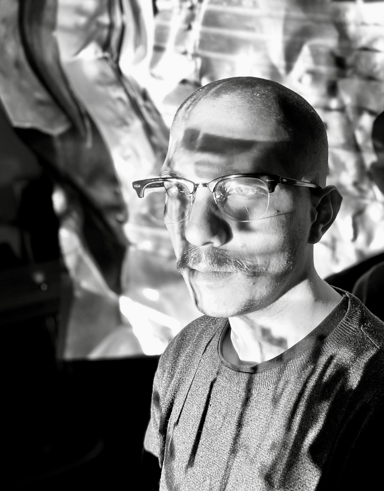
About
Most of my work starts with my hands on something: deforming an instrument, listening to an everyday object, building small electronic devices, or writing code that listens back. I'm drawn to the physical side of sound and to the shifting relation between composer, performer, and media. Central to my exploration is the concept of nonlinearity and its reflection on the creative process.
I studied Jazz Piano, Electronic Music, and Composition between Milan, Como, and Antwerp, and attended the one-year course at the Institute of Sonology in The Hague.
My training shows up in chamber music pieces ranging from solo to ensemble works, with and without electronics, as well as in multimedia installations and multichannel electronic works. I'm an electronic performer specialised in no-input mixing and other noisy practices. I teach music in the Drama department of the Conservatory of Antwerp, and I'm currently pursuing a PhD at the University of Antwerp.
CV — Highlights
Education
Grants
Selected Works
Music
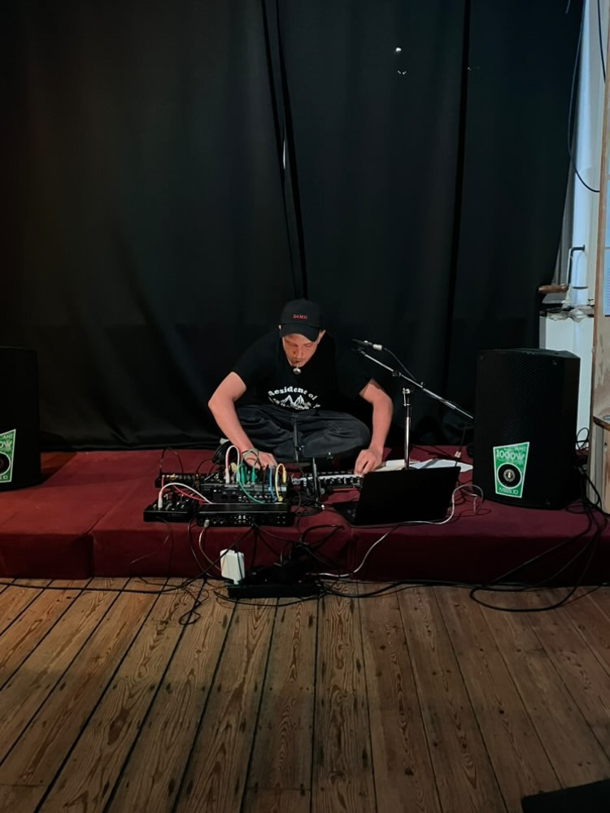
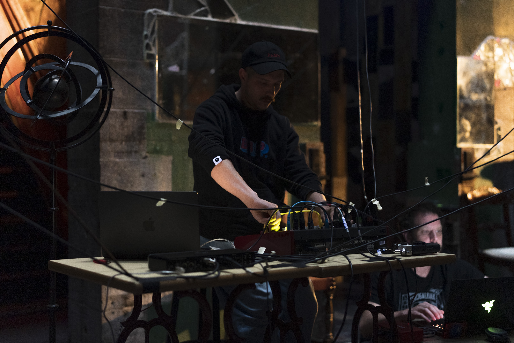
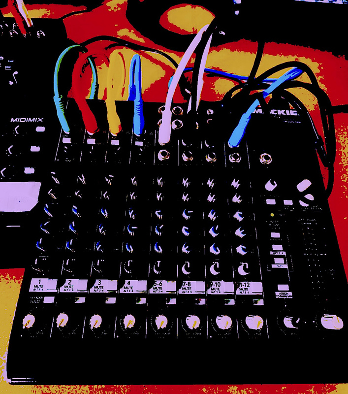
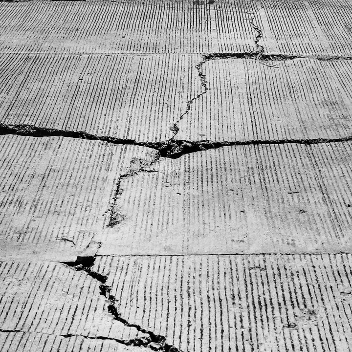
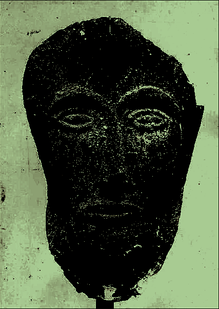
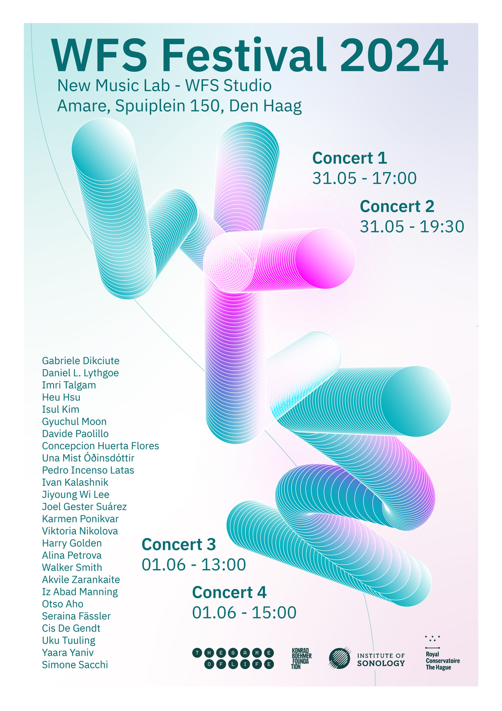
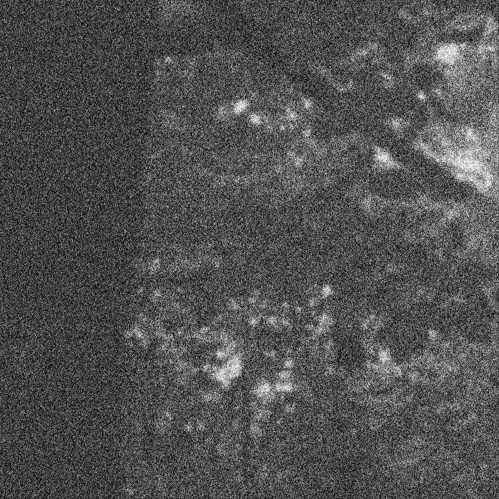
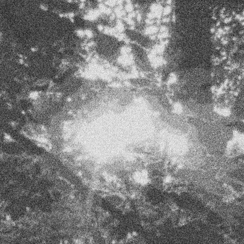
Multimedia
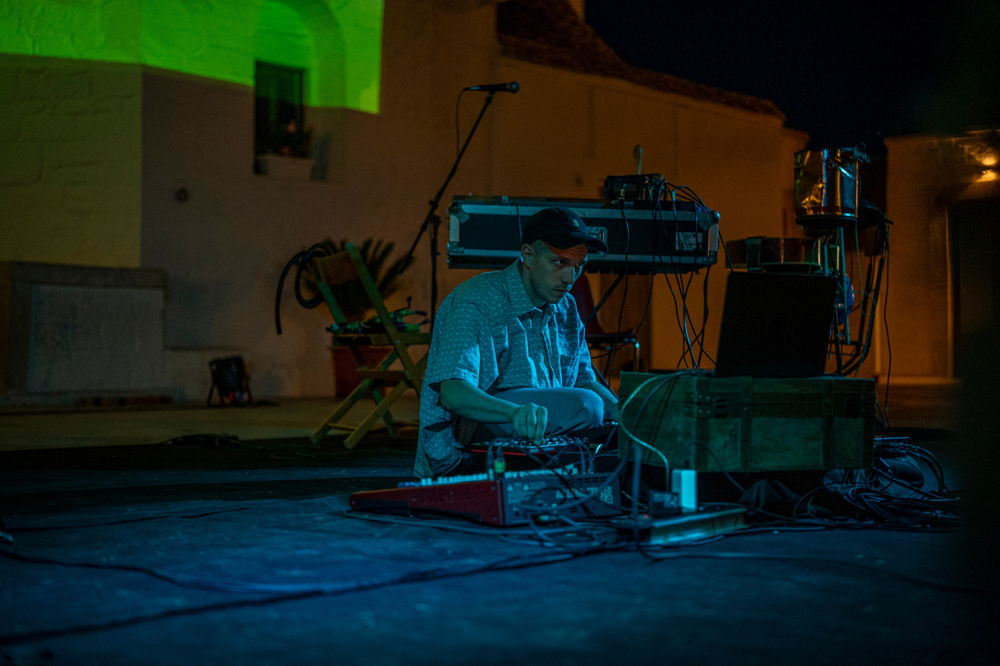
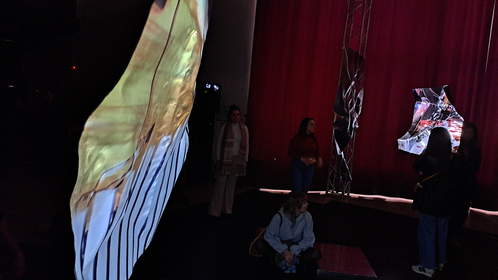
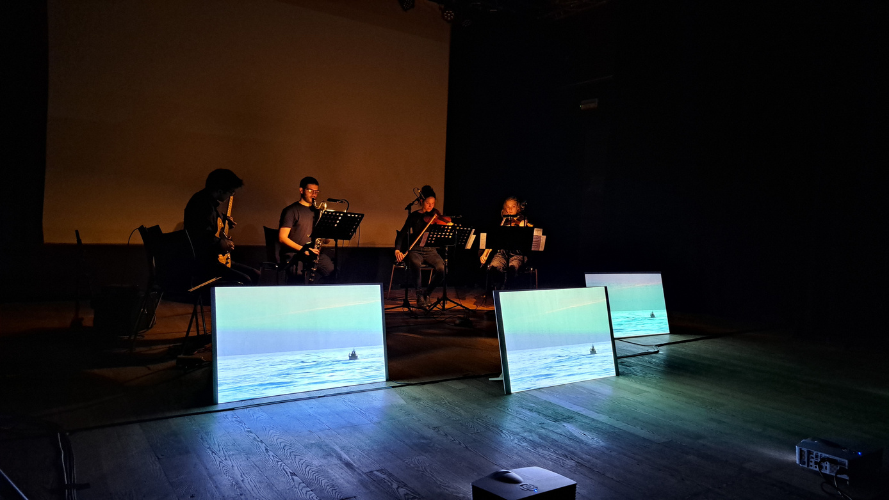
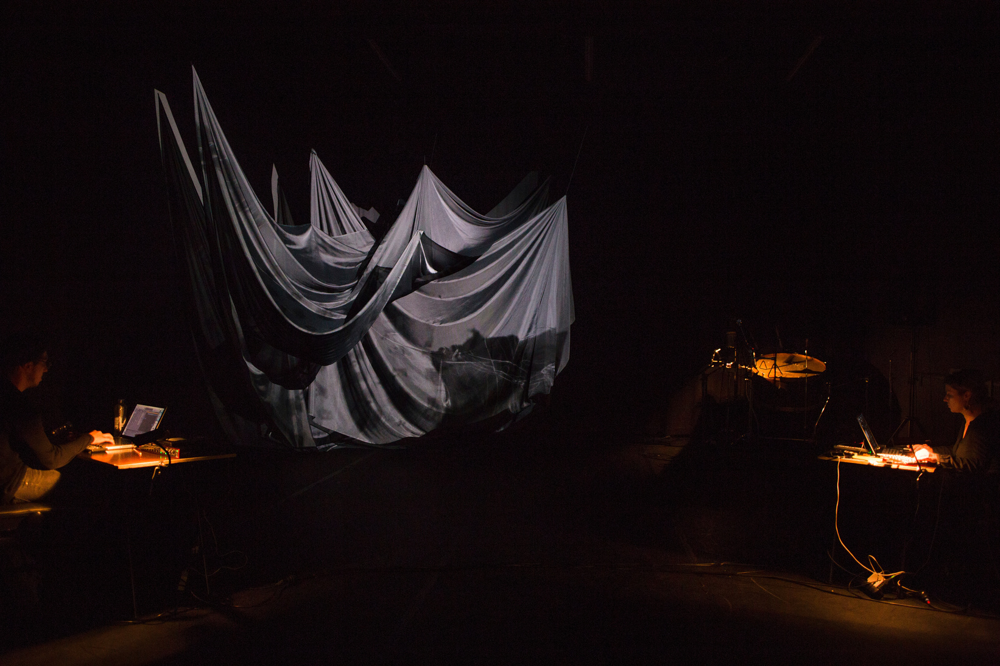
Performances
Upcoming
Past
Doctoral Research
Entangled Rawness: navigating nonlinear creativity through the no-input mixer
My research explores the creative and interactive possibilities of the no-input mixer within experimental music and performative art.
The study treats the no-input mixer as both source and outcome of nonlinearity. Approaching its "lack of control" as a democratic medium resists hierarchical structures, reframing the creative process as an open dialogue between artist, medium, and audience.
Rooted in experimental music practice, the research addresses this unpredictable, nonlinear nature from three interrelated perspectives: as an Instrument for composing and performing with unpredictability, error, non-virtuosity, and emergent behavior; as a Device for designing new hybrid instruments and performative ecosystems, exploring agency and liveness in art and technology; and as a Tool for opening accessible, sustainable spaces of "not-knowing," for shifting perception and unexpected experience.
Current Projects
Talks & Teaching — Upcoming
Talks & Teaching — Past
Music · 2025
My slumber is so deep, that it slips beneath the seas
For solo double bass and live electronics. Performed by Pietro Elia Barcellona (double bass). Graz, 23 February 2025.
The piece takes its title and its impulse from a short story in Irene Solà's When I Sing, Mountains Dance, where a mountain speaks with the humans who try to inhabit it. In that posthuman gaze, the double bass and its resonant body become a kind of geological voice: slow, indifferent, outlasting whatever gets built on top of it. However much we try to build and evolve, what remains, once we are gone, will be only nature, still murmuring underneath.
Watch →Music · 2024–2026
No-input/Some Inputs
Series of pieces for no-input mixer and acoustic instruments. Based on the acoustic morphologies of the acoustic instruments, each performance explores different interaction possibilities between them and the nonlinear system in which they're thrown.
The series includes:
- "Shall I wash my mouth?" — for cymbal, voice, and no-input mixer (2023–24)
- Le Masciàre, o lo Scongiuro della Settimana Santa — audio-reactive video system and no-input mixer (2024–25)
- Beton — for flute, objects, and no-input mixer (2025)
- Longing — for electric guitar, microphones, and no-input mixer (2026)
Project supported and realised with the Emerging Talent grant for Artistic Research of the Flemish Government.
Watch →Music · 2024
Phersu, risuonare il respiro
For accordion and live electronics. Performed by Arno Strauven (accordion). Antwerp, 19 June 2024.
The Etruscans used the word "phersu" to indicate the masks worn during theater plays, as well as an object used "to let the voice resonate." The accordion is a unique instrument that requires and involves a complete symbiosis between player and instrument, as if they become a completely new creature in which the human and mechanic parts become indistinguishable. "Phersu, risuonare il respiro" is an audio memory of a cybernetic cycle in which breath morphs into steam and ribbons become pipes.
Watch →Music · 2024
Undercurrent
Electroacoustic piece for Wave Field Synthesis spatialization system. Den Haag, 1 June 2024.
Undercurrent movements are often unnoticed shifts of flows within a larger system or environment. Masses of elements which hide and transform beneath the surface. Industrial chaos shaped by the underlying continuous motion of sonic elements that pulse and undulate the density of the acoustic space. Whispers that weave through the fabric of sound in a play of saturation and rarefaction, unseen yet felt.
Listen →Music · 2023
Face to face with the Submarine and its shiny iron
For amplified ensemble. Performed by Ensemble XXI. Antwerp, 18 May 2023.
The piece is inspired by Michele Mari's La stiva e l'abisso, which left me with the image of a submarine creature rising slowly toward the surface to take a look at the world, only to decide to descend back into the dark. I built my own instrument, the creature itself, and prepared every instrument in the ensemble to match its sonic morphology, so the whole group breathes with the same slow, pressurized motion, surfacing and sinking together.
Listen →Music · 2023
L'aria nei giorni festivi
For amplified ensemble and live spatialization. Performed by HERMESensemble. Antwerp, 20 March 2023.
Entering a blacksmith's forge can be an intense sensory experience: heat, fumes, the sound of beaten metal constantly echoing. One could almost become disoriented.
Composing "L'aria nei giorni festivi" was for me an exercise in imagination as it was a way of paying homage to Saverio Rotundo, blacksmith and artist from southern Italy. In this exercise, I imagined Rotundo during the 1970s beating irons and other urban residues in his forge. The repetitiveness of the gesture, acoustically rendered by the beating on the crotales, polarises the ensemble and resonates in the orchestration of a timbre that, evolving over time, moves through space.
The work Rotundo is forging is "Malinconia dei giorni festivi", a snapshot of the heavy socio-cultural climate during the period of the Italian Austerity. Thus, the dichotomy between the frenzy of midweek life and the complete holiday lull imposed by the law becomes the cue for a formal construction whose sections develop different degrees of the sound energy organization processes: from frenetic and discontinuous to static and continuous, and vice versa.
While I am in his forge, amidst tinkles, noises, and vapors, I hear u'Ciacio (that's what they used to call him in town) talking about how the objects he uses, once discarded, can through art create a new space where the spectator remains suspended and the distance separating him from the work is canceled. Hence the idea of creating through electronics an acoustic space where the amplified sounds and timbres of the ensemble are mirrored and, wandering freely, surround the audience, challenging the listening.
I step out of the forge and the tinkling of metal slowly dies away.
Listen →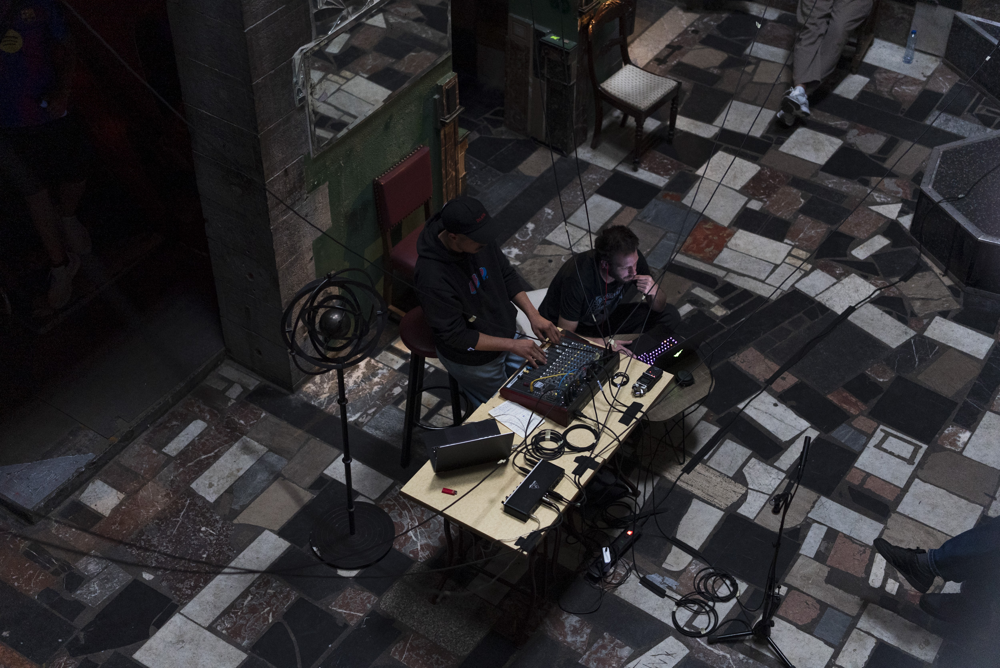
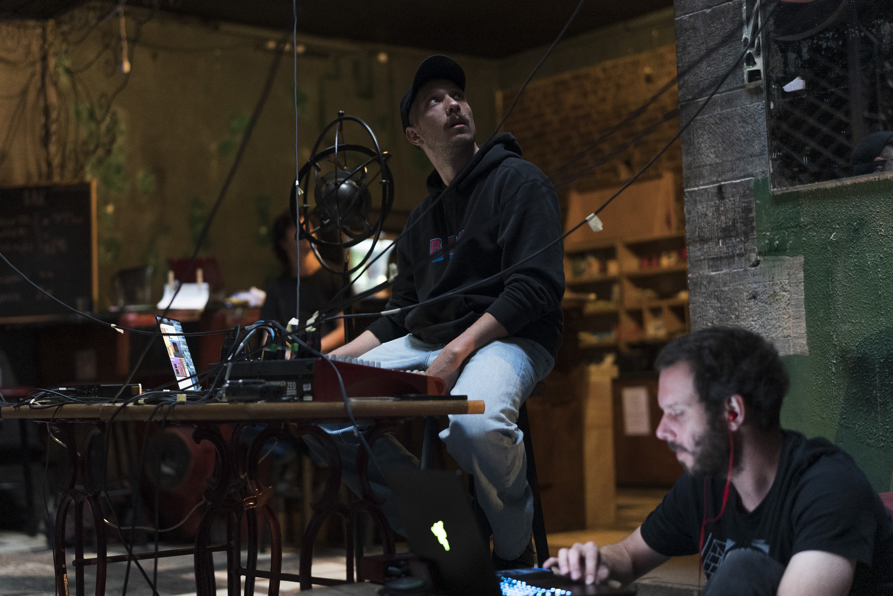
Music · 2026
Time Board Mother Control
Time Board Mother Control is a site-specific performance unfolding inside the Reactor space at Hectolitre. Musicians, scattered through the architecture, move like unstable signals, appearing and disappearing between resonant corners while a "mother board" redirects and contaminates their sounds. Feedback stretches across the rooms, whispers dissolve into fragile tones and circulate through hidden frequencies. The space itself answers back, transforming into a living surface of resonance and interference.
Project supported and realised with the Emerging Talent grant for Artistic Research of the Flemish Government.
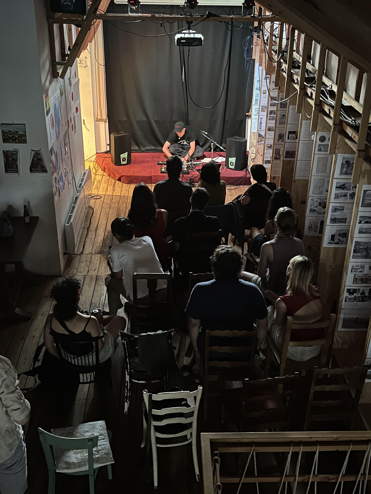
Music · 2026
Circuits' Love Songs
Circuits' Love Songs explores memory, voice, and machine agency through a custom no-input mixing board. Spoken words enter a feedback system where they blur, fragment, and re-emerge as unstable sonic traces. Rather than a fixed archive, memory becomes a shifting process shaped by interaction and transformation.
The performance emerges through listening and response: a shifting negotiation between human gesture and machine behavior. Control dissolves, authorship disperses, and meaning flickers between appearing and fading.
Project supported and realised with the Emerging Talent grant for Artistic Research of the Flemish Government.
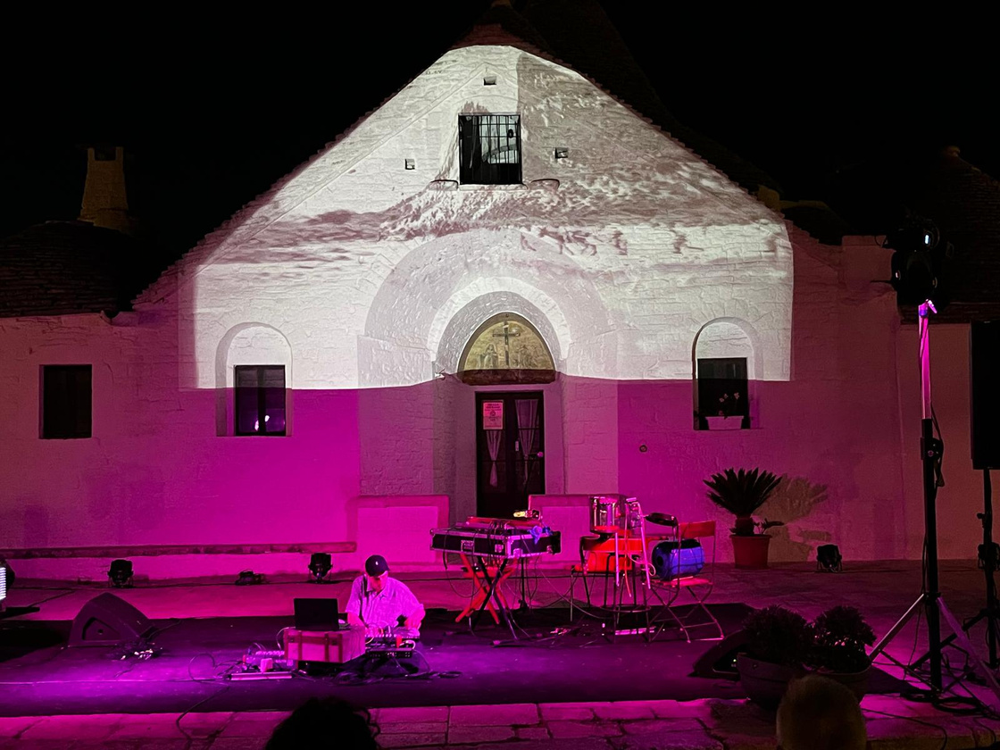
Multimedia · 2025
Le Masciàre, o lo Scongiuro della Settimana Santa
Live audiovisual electroacoustic performance. Alberobello, 12 July 2025.
Le Masciàre, or the Exorcism of Holy Week, is a live audiovisual performance that weaves together ancient rituals from Southern Italy with practices of electronic experimentation. Inspired by Ernesto de Martino's studies on southern "low magic," the performance explores the negotiation between control and chaos, rationality and instinct, the visible and the invisible.
The medium of this exploration is a hybrid audio-video system at the heart of which is the no-input mixer, an unpredictable instrument capable of generating sound exclusively through feedback loops. Through the system's nonlinearity, the audiovisual experience is shaped as a contemporary rite: sounds and archival footage merge, mutate, and re-emerge as electronic textures and circuit noise, evoking symbols and impressions of a lost peasant world and creating a dialogue between memory and technology.
Le Masciàre is not folklore but a living ritual, an invitation to cross the threshold of the unknown and confront unpredictability as part of the human condition.
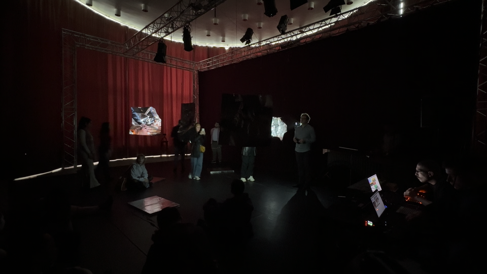
Multimedia · 2024
[Sospensione Collettiva #1]
Live multimedia performance, in collaboration with Daniel Lythgoe (architect/sound artist), Mario Mascolo and Younshang Bao (percussion). Antwerp, 15 June 2024.
[Sospensione Collettiva #1] is a conceptual multimedia work spanning installation, performance, and instrument-making, exploring the dynamics between the individual and the collective within a shared instrumental system. Where does the identity of the self end and the reflection of the other begin?
Two percussionists, hidden behind curtains at opposite ends of the space, drive a hybrid digital-analogue feedback system through their playing. The audience's movement through the room activates projections of the otherwise hidden performers, while five suspended resonant metal bodies — acting at once as instruments and as projection surfaces — weave an audio-visual counterpoint in response to both. The feedback system becomes the true instrument, dissolving the line between performer, audience, and machine.
Trailer →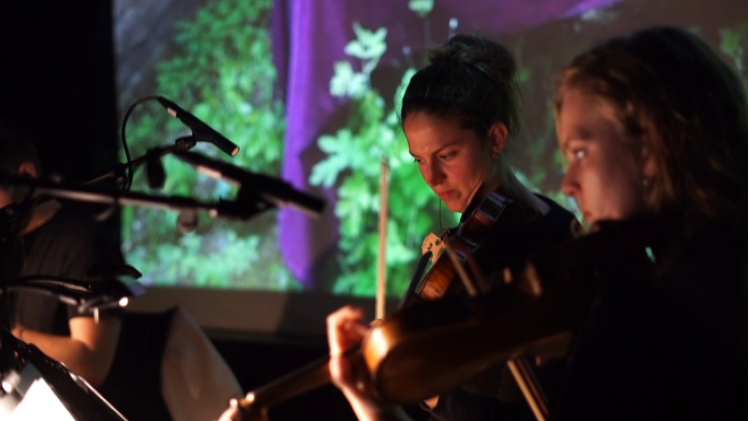
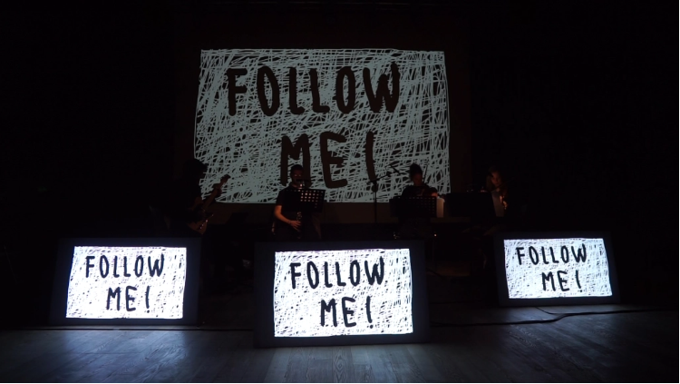
Multimedia · 2023
I was a river, an elephant and a worker
An audio-visual journey, in collaboration with Tijana Petrovic (video and text), Barbara Udovcic and Annija Kolerta (violin), Miguel Lopez (bass clarinet), and Yngwie Janseghers (electric guitar). Antwerp, 6 May 2023.
Watch →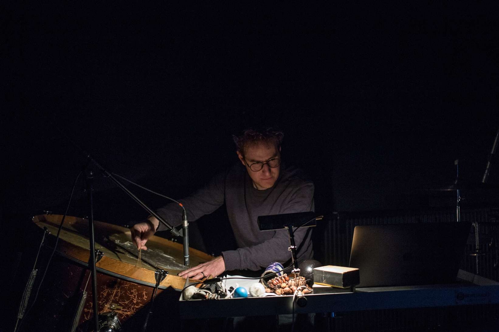
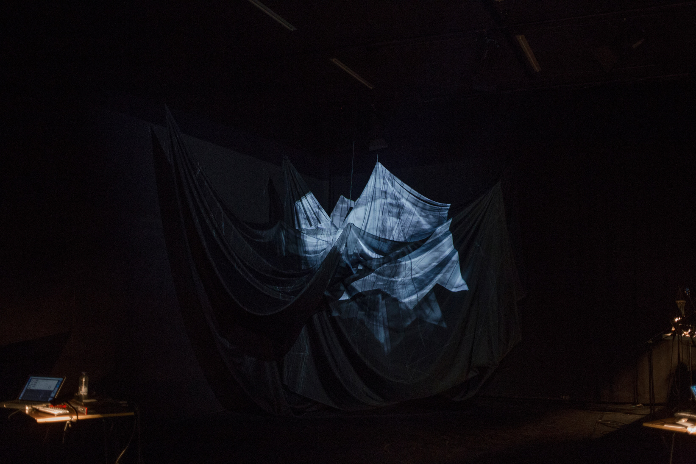
Multimedia · 2022
When I close my eyes everything turns black
Audio-visual performance, in collaboration with BL!NDMAN Collective, Linda Jasmin Mayer, and Ljudmila Siewersky. Antwerp, August 2022.
Metaphor of an intimate space as the space of dreams. A space to enter and rest.
It reminds of a ship from the outside: the metaphor of a journey, as each night is a journey. It is also a symbol for Linda's journey to the Arctic.
Does the body disappear when we dream?
Losing control.
Watch →